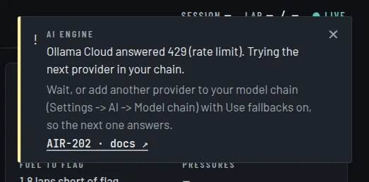

Troubleshooting
Most problems come with an AIR code on screen. Look it up in Error codes first; the answers below cover the rest.

The engineer is silent #
Nothing is said at all
Check, in order:
- The status bar reads Telemetry · Live. If not, see No telemetry.
- The app is not paused (Home page).
- No notice says AIR-207 (no provider can run: a key is missing) or AIR-208 (every provider failed).
- The engineer's voice loaded: AIR-402.
It answers questions but rarely speaks on its own
That is by design when nothing has changed: the engineer may stay quiet on a check-in with nothing new. Turn up Engineer chattiness or lower the Tick interval in Settings → AI. Fuel updates are muted by default (Suppress fuel chatter); it still answers fuel questions and warns when the margin gets tight.
It goes quiet after a while
Usually a free-tier limit: AIR-202. Add a second provider to the model chain and keep Use fallbacks on.
Answers arrive late
A slow provider: AIR-203. Questions allow 8 seconds, other calls 60. Move a faster provider up the chain.
No telemetry #
ACC: the Live page stays empty
- The game in Settings → Telemetry → Sim is Assetto Corsa Competizione, and the app was restarted after changing it.
- You are on track. ACC publishes nothing in the menus.
- Run
python acc_run.py --selfteston track. See Connect ACC.
ACC: no gaps, positions or driver names
Those need the Broadcasting API: turn on
Settings → AI → Live timing and check broadcasting.json, then restart ACC.
See Live timing.
F1 25: nothing arrives
In the game's telemetry settings: UDP on, port 20778, the IP of the PC running
the app, and the same UDP format as Settings → Telemetry → UDP packet format. See
Connect F1 25.
A notice says the telemetry reader keeps crashing
That is AIR-301. The game selected in Settings must be the one you are running.
Voice and microphone #
It does not hear me
- The mic is not muted and the right input is chosen in Settings → Audio.
- Windows allows microphone access for desktop apps. A mic that cannot be opened is AIR-401.
- The mic only listens while telemetry is live.
It mishears me
Try a larger local model size, or Groq cloud transcription in Settings → Audio. See Talking to the engineer.
Game sounds cut the engineer off
Raise interrupt_rms in web_config.json, or use headphones
so the microphone does not pick up the game.
The voice changed on its own
The PC could not render the chosen voice in time, so the app switched to the fast one: AIR-403.
The engineer speaks English, not my language
The language pack is not installed yet. It needs internet once; check Settings → Language. Until it is ready, you hear English rather than nothing.
Providers and keys #
My key is rejected
AIR-201. Paste a fresh key in Settings → Secrets, with no spaces, and check the provider still offers the model in your chain.
Local Ollama does not work
Which provider should I use?
Start with the recommended setup: a free Ollama Cloud key.
Everything else #
My settings did not stick
My phone cannot open the dashboard
A notice says a worker was restarted
AIR-901. Once is harmless; if it repeats, restart the app and report it.
Reporting a problem #
Include the AIR code and the full message, which game you run, and your model chain (provider names only, never a key). A code quoted exactly is the fastest way to a fix.